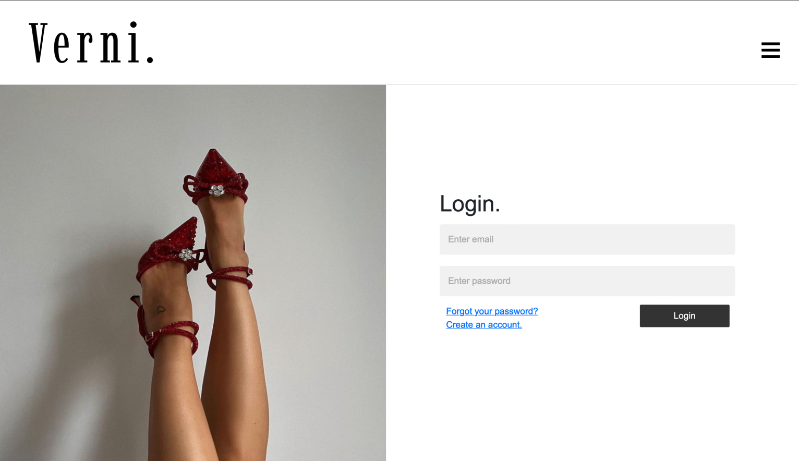
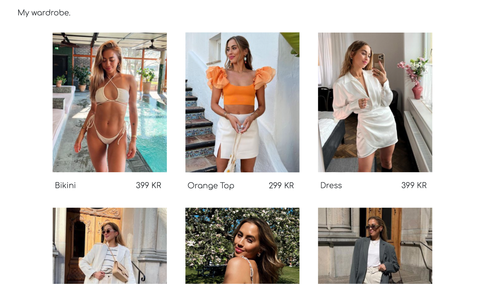
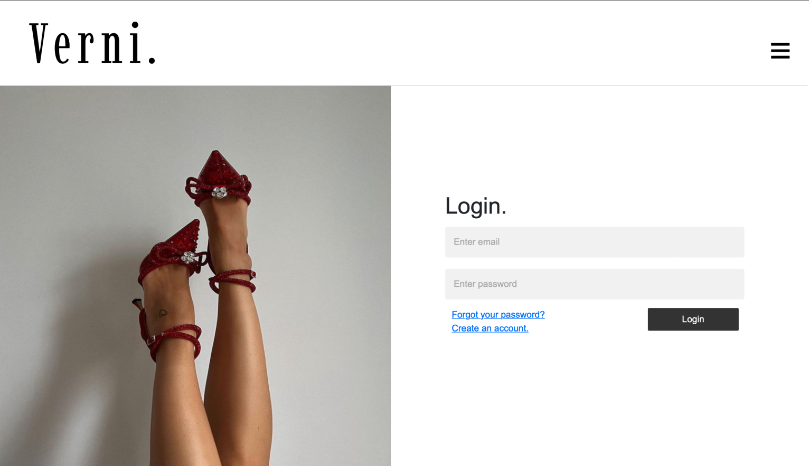
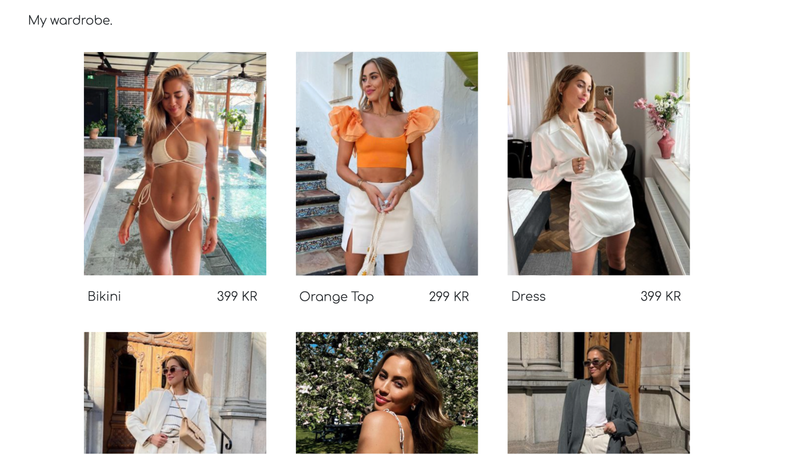

Verni is a storefront designed for influencers to share their favorite pieces of clothing with their followers.
Users can save their favorite clothing items on their personal page and follow their favorite influencers to easily
find what they’re looking for. For influencers, it provides an easy way to share their favorite pieces and gather
them
in one place, instead of across various social media platforms. This creates a seamless shopping experience, making it easier for followers to discover and purchase the
items their favorite influencers are wearing.
Most people in the social media industry can probably relate to the feeling of receiving multiple comments on their
content asking where a specific dress, shirt, or skirt was purchased. We solved this by taking inspiration from
Amazon storefronts, but focusing solely on clothing. It was developed for the course Application Programming
in Python, where my team and I used HTML, CSS, JavaScript, and Python to develop the website.
 


